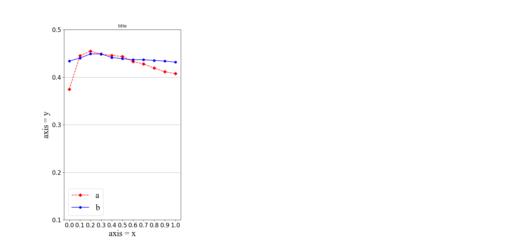

今天记录一下python可视化工具：matplotlib.pyplot的基本使用方法。
使用之前首先import matplotlib.pyplot as plt
测试数据
1 | num1 = [0.37454, 0.44534,0.45488,0.44852,0.44577,0.44364,0.43286,0.42771,0.4192,0.41142,0.4076] |
添加子图
一块大的画布可以分为几个小的画布。
1 | fig = plt.figure() |
上面的代码将一个大的画布分为三个子图。
add_subplot()方法就是添加一个子图，其中的参数是一个数，例如131表示将画布分为1行3列（即3个子图），该子图为第1个子图。
P.S. 如果要添加第2以及第3个子图，要首先画完第一个子图再执行fig2 = fig.add_subplot(132)。必须添加一个子图画一个子图。
经测试，如果一次性添加完3个子图，那么后面plt的设置都只会在最后一个子图上生效。
更正 添加多个子图后，plt默认会指向最后一个添加的子图，所以plt的操作都是针对最后一个添加的子图的。
可以使用 plt.sca(fig1) （参数是前面创建的子图的对象），来选择前面创建的子图，然后后面的操作就是针对选择的fig1子图的操作了。
画线
下面我们在子图1上进行画图。
1 | fig1.plot(x, num1, label='a', linestyle='--', color='red', marker='D') |

由于我们是1行3列的子图，我们只画了第一幅，所以右边两幅的位置现在都是空白，所以右边看起来比较空。
上面的操作基本上都有注释解释。这里记录一下plot函数中的参数以及对线段的属性设置。
plot函数中，x是横坐标数组，num1是纵坐标数组。label是线段的标签，linestyle是线的种类（比如虚线、实线等），color是线的颜色，marker是数据点的形状。
linestyle
| 字符 | 样式 |
|---|---|
| ‘-‘ | solid line |
| ‘–’ | dashed line |
| ‘-.’ | dash-dot line |
| ‘:’ | dotted line |
marker
| 字符 | 样式 |
|---|---|
| ‘.’ | point marker |
| ‘,’ | pixel marker |
| ‘o’ | circle marker |
| ‘v’ | triangle down marker |
| ‘^’ | triangle up marker |
| ‘<’ | triangle left marker |
| ‘>’ | triangle right marker |
| ‘1’ | tri_down marker |
| ‘2’ | tri_up marker |
| ‘3’ | tri_left marker |
| ‘4’ | tri_right marker |
| ‘s’ | square marker |
| ‘p’ | pentagon marker |
| ‘*’ | star marker |
| ‘h’ | hexagon1 marker |
| ‘H’ | hexagon2 marker |
| ‘+’ | plus marker |
| ‘x’ | x marker |
| ‘D’ | diamond marker |
| ‘d’ | thin_diamond marker |
| ‘_’ | hline marker |